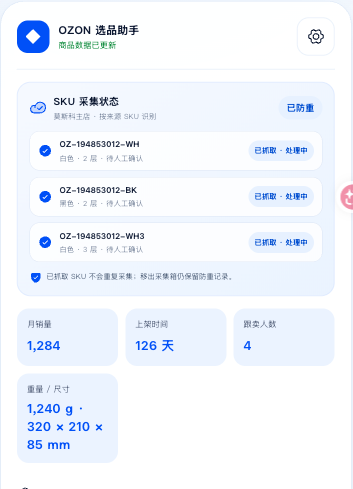
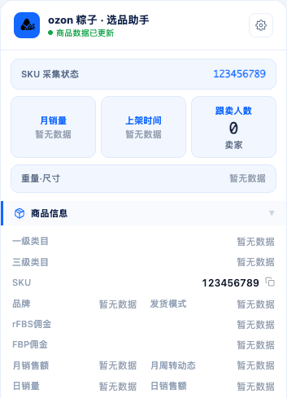
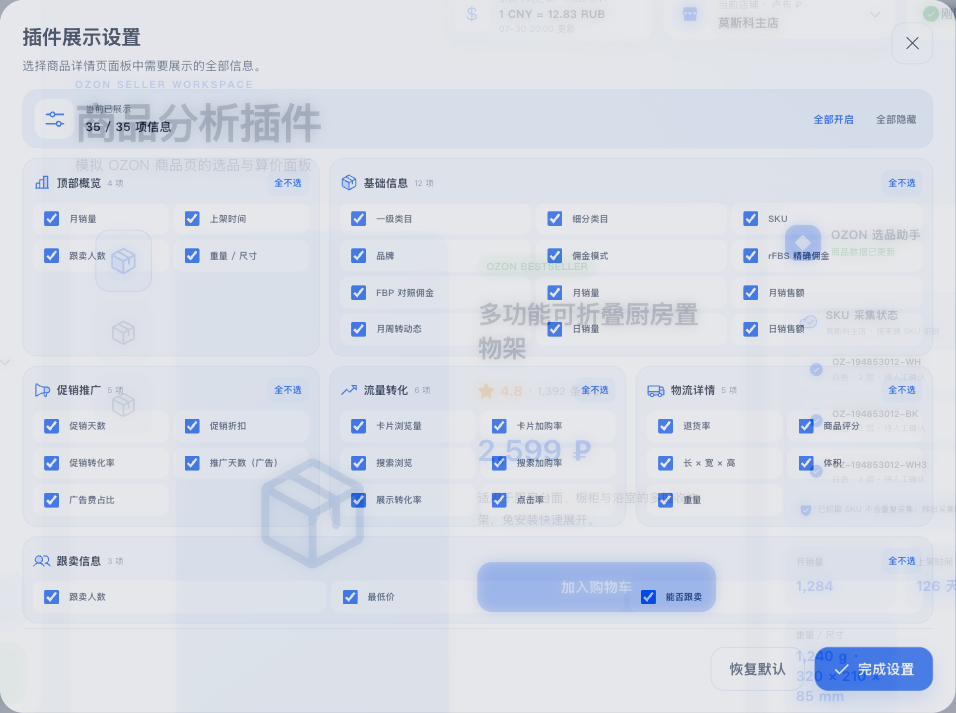
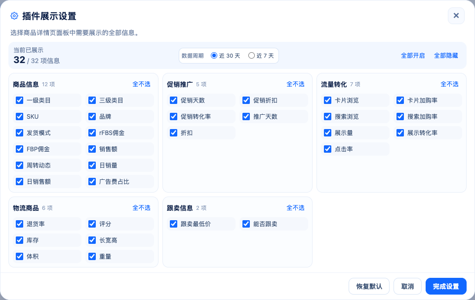

组件同尺度：reference 与最新 production fixture
数据面板可见区域 — 两侧均为 353 × 489 CSS px，1× 密度
Reference component

Implementation component

设置弹窗本体 — reference 956 × 713，implementation 962 × 609 CSS px，均为 1× 密度
Reference component

Implementation component
